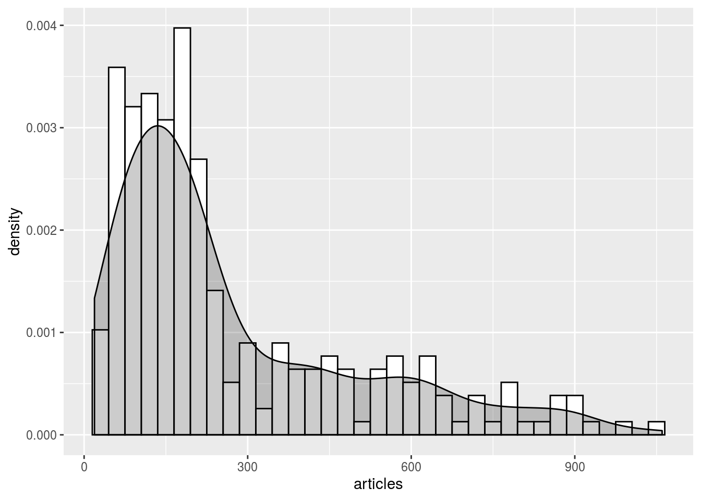
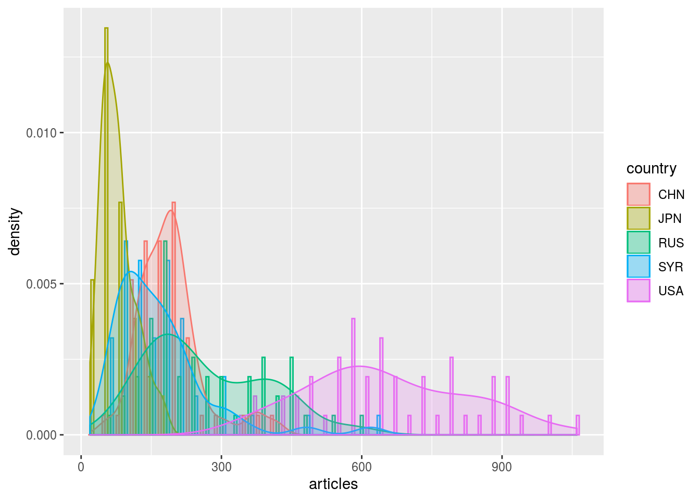
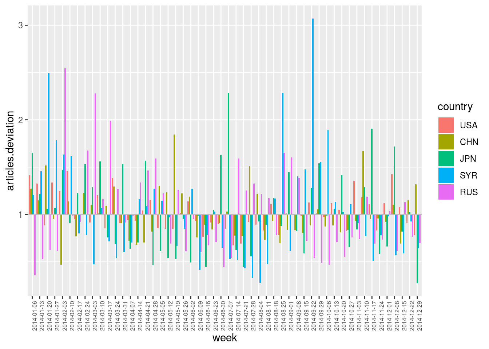

4 Outlier Analysis
One of the tools that the data.cube library offers deals with the detection of statistical outliers in multidimensional data. In this context, variables are interpreted as multidimensional contingency tables from which multiple marginal counts can be extracted (depending on the selected dimensions). These marginals then allow for the design of multiple models of the observed variables, from which significant deviations are then interpreted as outliers. In this part of the tutorial, we show how functions compute.var.model and plot.outliers allow for the computation of such models and the visualisation of the resulting deviations.
For more details regarding the formal ground of these functions, please refer to: Audrey Wilmet and Robin Lamarche-Perrin. (2019). Multidimensional Outlier Detection in Temporal Interaction Networks. arXiv:1906.02541
4.1 First example: Bidimensional outliers
This first example focuses on the evolution over year 2014 of the number of articles citing the 5 following countries: The United States, Russia, China, Syria, and Japan.
geomedia_2014 <-
geomedia %>%
select.dim (week, country) %>%
filter.elm (week, format (name, "%Y") == "2014") %>%
arrange.elm (week, name)
selected_countries <- c ("USA", "RUS", "CHN", "SYR", "JPN")
geomedia_2014 %>%
filter.elm (country, name %in% selected_countries) %>%
plot.var (articles, sep.dim.names = country, type = "line") +
theme (axis.text.x = element_text (angle = 90, size = 6))4.1.1 Taking into account the expected number of articles for each country
By plotting the distribution of all these observations, one could define some king of “statistically expected” range of values and then identify outliers as unexpectedly high (or unexpectedly low) values. In the plot below, one could for example grossly characterise the distribution as a Gaussian curve (values on the left) plus some positive outliers (values on the right).
geomedia_2014 %>%
filter.elm (country, name %in% selected_countries) %>%
as.data.frame () %>%
ggplot (aes (x = articles)) +
geom_histogram (aes (y = ..density..), binwidth = 30, colour = "black", fill = "white") +
geom_density (alpha = 0.2, fill = "black")
Yet, it seems that several Gaussian distributions are actually superimposed. One could hence recognise that each of the five selected country has its own expected range of values, depending on its usual “media coverage” (expected number of articles per week). In this sense, one could hence search for outliers within each of these five distributions independently.
geomedia_2014 %>%
filter.elm (country, name %in% selected_countries) %>%
as.data.frame () %>%
ggplot (aes (x = articles, color = country, fill = country)) +
geom_histogram (aes (y = ..density..), binwidth = 30, alpha = 0.2, position = "dodge") +
geom_density (alpha = 0.2)
To take into account these different ranges of values, another solution consists in normalising the observations by taking into account the expected “media coverage” of each country. Function compute.var.model aims at computing such normalisation models.
This function take in argument a formula specifying the normalisation scheme that needs to be applied. In the example below, formula articles (week * country) ~ articles (country) indicates that we want to model variable articles associated to dimensions week and country (left-hand side) by taking into account its marginal total along dimension country (right-hand side). In other words, with this first model, the number of articles citing a given country during a given week is expected to be similar to the average number of articles citing that country each week, that is the total number of articles citing that country divided by the number of weeks.
Formally, given \(w \in \texttt{week}\) and \(c \in \texttt{country}\), we have \[\texttt{articles.model}(w,c) \quad = \quad \frac{\texttt{articles}(.,c)}{|\texttt{week}|} \text{,}\] where \(\texttt{articles}(.,c)\) denotes the marginal total along dimension country: \[\texttt{articles}(.,c) \quad = \quad \sum_{w' \in \texttt{week}} {\texttt{articles}(w',c)} \text{.}\]
geomedia_2014 %>%
filter.elm (country, name %in% selected_countries) %>%
compute.var.model (articles (week * country) ~ articles (country)) %>%
summary ()## Computing model: articles (week * country) ~ articles (country) * NULL (week)## data.cube of 2 dimensions and 3 variables
##
## -> Dimension week
## - Element number: 52
## - Class (type): Date (double)
## - Element names: 2014-05-19, 2014-10-13, 2014-06-09, 2014-05-26, 2014-06-16, ...
##
## -> Dimension country
## - Element number: 5
## - Class (type): character (character)
## - Element names: USA, CHN, JPN, SYR, RUS
##
## -> Variable articles
## - Dimensions: week x country
## - Class (type): numeric (double)
## - NA value: num 0
##
## -> Variable articles.model
## - Dimensions: week x country
## - Class (type): numeric (double)
## - NA value: num 0
##
## -> Variable articles.deviation
## - Dimensions: week x country
## - Class (type): numeric (double)
## - NA value: num 1We see that compute.var.model computed two new variables that have been added to the data.cube:
Variable
articles.modelis the average number of articles per week for each country (see above);Variable
articles.deviationprovides a measure of deviation between the observed variablearticleand the modelarticles.model. By default, it is the ratio between the two variables (see below for other options). For example,articles.deviation == 3indicates that a country has been three times more cited during a week than usually andarticles.deviation == 0.5indicates that it has been two times less cited.
These computed variables can now be visualised. Let’s first have a look at the model itself by plotting articles.model.
geomedia_2014 %>%
compute.var.model (articles (week * country) ~ articles (country)) %>%
filter.elm (country, name %in% selected_countries) %>%
plot.var (articles.model, sep.dim.names = country, type = "line") +
theme (axis.text.x = element_text (angle = 90, size = 6))## Computing model: articles (week * country) ~ articles (country) * NULL (week)This plot simply consists in the average number of articles per week for each of the five countries. We clearly see here that they all have a different expected values to which observations can then be compared. To do so, we now plot variable articles.deviation, that is the ratio between observed and expected values.
geomedia_2014 %>%
compute.var.model (articles (week * country) ~ articles (country)) %>%
filter.elm (country, name %in% selected_countries) %>%
plot.var (articles.deviation, sep.dim.names = country, type = "bar") +
theme (axis.text.x = element_text (angle = 90, size = 6))## Computing model: articles (week * country) ~ articles (country) * NULL (week)This plot finally allows for the identification of outliers for each country through time, relatively to their usual “media coverage”. Values are centered on 1. Above this line are positive outliers (more cited than usual) and below are negative outliers (less cited than usual).
4.1.2 Also taking into account the expected number of articles for each week
We just saw that the average number of articles is not comparable from one country to another. Similarly, one could point out that the total number of articles is not constant over time.
geomedia_2014 %>%
select.dim (week) %>%
plot.var (articles, type = "line") +
theme (axis.text.x = element_text (angle = 90, size = 6))In particular, as we see in the plot above, the dataset we explore contains much less articles during the first weeks of 2014 than later during the year. (This is due to data collection issues.) As a result, it is less likely to observe outliers during that period from the simple fact that observations are almost always below the computed averages. Conversely, outliers that are identified at the end of the year are slightly overestimated as global activity is higher than average at that time.
To compensate for these temporal variations, one can also include them in the computed model. In the plot below, formula articles (week * country) ~ articles (country) * articles (week) indicates that marginal totals are taken into account both for dimension country (as above) and for dimension week. The number of articles citing a given country during a given week is hence expected to be similar to the total number of articles citing that country multiplied by the total number of articles published during that week divided by the total number of articles in the corpus.
Formally, given \(w \in \texttt{week}\) and \(c \in \texttt{country}\), we have \[\texttt{articles.model}(w,c) \quad = \quad \frac{\texttt{articles}(.,c) \; \texttt{articles}(w,.)}{\texttt{articles}(w,c)} \text{,}\] where \(\texttt{articles}(w,.)\) denotes the marginal total along dimension week and \(\texttt{articles}(.,.)\) denotes the grand total. It results a normalisation model that both takes into account the average “media coverage” of each country and the global temporal variations.
First, the model:
geomedia_2014 %>%
compute.var.model (articles (week * country) ~ articles (week) * articles (country)) %>%
filter.elm (country, name %in% selected_countries) %>%
plot.var (articles.model, sep.dim.names = country, type = "line") +
theme (axis.text.x = element_text (angle = 90, size = 6))## Computing model: articles (week * country) ~ articles (week) * articles (country)Second, the deviations:
geomedia_2014 %>%
compute.var.model (articles (week * country) ~ articles (week) * articles (country)) %>%
filter.elm (country, name %in% selected_countries) %>%
plot.var (articles.deviation, sep.dim.names = country, type = "bar") +
theme (axis.text.x = element_text (angle = 90, size = 6))## Computing model: articles (week * country) ~ articles (week) * articles (country)
Contrary to the previous deviation plot, we can see here some outliers appearing during the first weeks of 2014, even though the global “media activity” on that period is lower than during the rest of the year.
Warning! Note that, in the operation sequence above, function compute.var.model (computing the model) is called before function filter.elm (selecting the five countries of interest). Order is important! The normalisation model (and in particular the global “media activity”) is here computed with respect to the full corpus, and not only with respect to the subset of countries. Filtering of elements is here applied after computing the model just to reduce the number of curves to be displayed in the plot.
4.1.3 Significativity of deviations
Ratio between observed and expected values induce interpretation errors has it does not account for the statistical significativity of deviations. Indeed, with this basic measure, observing 2 articles when expecting 1 is considered as surprising as observing 200 when expecting 100. Yet, variations on small numbers can be the result of noisy data or randomness in the observed processes.
Function compute.var.model hence proposes several measures to account for the significativity of deviations. To this end, argument deviation.type can take the following values:
ratio
\[\texttt{var.deviation} \quad = \quad \frac{\texttt{var}}{\texttt{var.model}}\]
chi2
\[\texttt{var.deviation} \quad = \quad \left\{ \begin{array}{l} \hphantom{-} \displaystyle\frac{(\texttt{var} - \texttt{var.model})^2}{\texttt{var.model}}\\ \hspace{1em} \text{if } \texttt{var} \geq \texttt{var.model}\\[1ex] - \displaystyle\frac{(\texttt{var} - \texttt{var.model})^2}{\texttt{var.model}}\\ \hspace{1em} \text{if } \texttt{var} \leq \texttt{var.model} \end{array}\right.\]
poisson
\[\texttt{var.deviation} \quad = \quad \left\{ \begin{array}{l} \hphantom{-} \log\Pr (\texttt{var} \geq \text{Pois}(\texttt{var.model}))\\ \hspace{3em} \text{if } \texttt{var} \geq \texttt{var.model}\\[1ex] - \log\Pr (\texttt{var} \leq \text{Pois}(\texttt{var.model}))\\ \hspace{3em} \text{if } \texttt{var} \leq \texttt{var.model} \end{array}\right.\]
KLdiv
\[\texttt{var.deviation} \quad = \quad \frac{\texttt{var}}{\sum{\texttt{var}}} \; \log_2 \left (\frac{\texttt{var}}{\texttt{var.model}} \right)\]